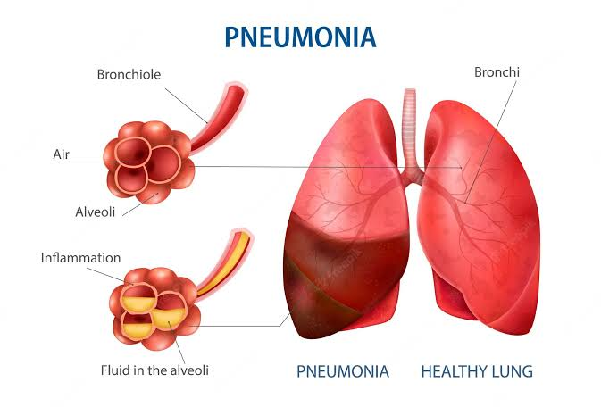

Pneumonia Detector
Pneumonia is an infection that inflames the air sacs in one or both lungs. The air sacs may fill with fluid or pus (purulent material), causing cough with phlegm or pus, fever, chills, and difficulty breathing. A variety of organisms, including bacteria, viruses and fungi, can cause pneumonia.

Chest X-Rays which are used to diagnose pneumonia need expert radiotherapists for evaluation. Thus, developing an automatic system for detecting pneumonia would be beneficial for treating the disease without any delay particularly in remote areas. Due to the success of deep learning algorithms in analyzing medical images, Convolutional Neural Networks (CNNs) have gained much attention for disease classification. In addition, features learned by pre-trained CNN models on large-scale datasets are much useful in image classification tasks. In this work, we appraise the functionality of pre-trained CNN models utilized as feature-extractors followed by different classifiers for the classification of abnormal and normal chest X-Rays. We analytically determine the optimal CNN model for the purpose. Statistical results obtained demonstrates that pretrained CNN models employed along with supervised classifier algorithms can be very beneficial in analyzing chest X-ray images, specifically to detect Pneumonia.